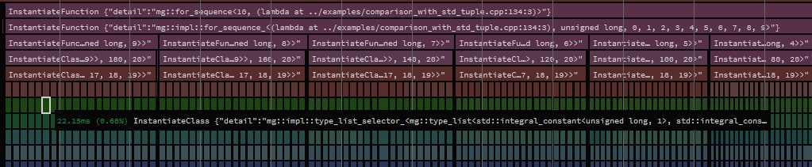
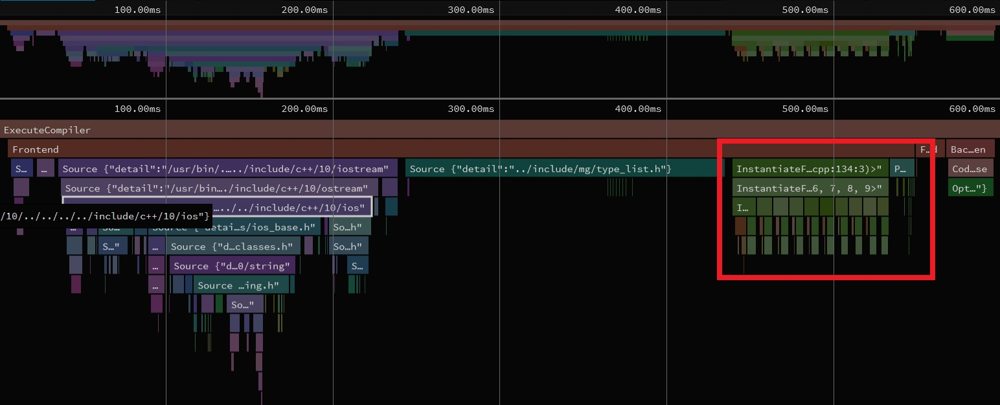

Compilation speed humps: std::tuple
Recently I refactored the CI test harnesses for an as-yet-unreleased project, only to find after doing so that compile times on the CI server had ballooned from around 7 minutes to 35+ minutes. Deciding that my wallet simply could not take the hit, I set myself on a mission to get that figure back down to something reasonable, and after a day spent with clang's -ftime-trace I was able to find the root cause: std::
Background
The project in question has a number of linear algebra types that required testing with all fundamental arithmetic types, and for different extents (e.g. vector<float, 2>, vector<float, 3>, vector<double, 2>, etc.). Wanting to parameterize this somehow, but also being fairly new to unit testing when I put the project's tests together, I came up with the homebrew solution of sticking the tests in a header which would be included in multiple translation units with different #defines for specifying the template type, e.g.:
// test_vec2_float.cpp #define SCALAR_TYPE float #define DIMENSIONS 2 #include "vector_tests.h"
Very tedious to maintain, but the codebase was small, so I didn't really dig any deeper. Once the project grew, however, this method became a huge PITA. If you've written unit tests in C++ you can likely see where this is going.
C++ unit test frameworks invariably have a means of parameterizing a test case by type so you can test a class or function template for many types and only need to write the test code once. In Catch2, which is the framework I use, there's two primary facilities for doing this:
- TEMPLATE_
TEST_ CASE - requires you to explicitly list the type arguments - TEMPLATE_
LIST_ TEST_ CASE - extracts the types from some variadic type list (e.g. std:: tuple)
When seeking to refactor my terrible homebrew solution into something more maintainable I chose TEMPLATE_
#define SCALAR_TYPES short, int, long, long long, float, double // ... etc template <typename... T> using all_matrix_types = std::tuple< matrix<T, 2, 2>..., matrix<T, 2, 3>..., matrix<T, 2, 4>..., matrix<T, 2, 5>..., matrix<T, 3, 2>..., matrix<T, 3, 3>..., matrix<T, 3, 4>..., matrix<T, 3, 5>..., matrix<T, 4, 2>..., matrix<T, 4, 3>..., matrix<T, 4, 4>..., matrix<T, 4, 5>..., matrix<T, 5, 2>..., matrix<T, 5, 3>..., matrix<T, 5, 4>..., matrix<T, 5, 5>... >; TEMPLATE_LIST_TEST_CASE("some tests", "", all_matrix_types<SCALAR_TYPES>) { // ... }
While being a lot cleaner (all being in one TU), this had the problem of being an absolute dog to compile, even on my Ryzen 3950X. And of course! There's no way for a build system to parallellize this because it's all just one translation unit. (Not to mention GCC required so much RAM to build it that it would go OOM and crash.) While being a mess to maintain, my previous solution was at least trivially consumable.
Not wanting to undo my refactor, I settled on a solution that would slice the std::-DBATCH_INDEX=N). Now it would compile on my machine. Hooray! It also seemed relatively performant. (But, again, Ryzen 3950X.) Once up on CircleCI the problem became obvious:
Clearly there was much more work to be done.
Establishing a baseline
Since I've already applied the fixes and this write-up is being done post-mortem, the rest of this article will be based on a synthetic re-creation of the problem. The names of types and functions have been changed to protect the innocent.
With that established, here's how long the 'vanilla' code took to compile:
| Clang 12 | GCC 10 | MSVC 19.29 | |
|---|---|---|---|
| baseline | 8.568s | 7.439s | 11.320s |
Finding the root cause with Clang's -ftime-trace
First step was to determine where the compilers were spending most of their time. One way of doing that is to use Clang's -ftime-trace flag, introduced in LLVM 9.0. Specifying -ftime-trace causes Clang to spit out compilation timing data as JSON files next to .obj files they correspond to. These files can then be fed into chrome's chrome://tracing (or something like speedscope if you're allergic to Chrome like I am), allowing you to get a good birds-eye view of the work the compiler needs to do to bring your code to life.
Obviously -ftime-trace won't map exactly to the work done by GCC and MSVC, but it typically holds that taking reasonable steps to make code compile faster using one compiler will also have a positive impact on the time taken by other compilers.
Pass 1: Eliminating std::tuple instantiations
Using -ftime-trace with the code in question immediately gave me a very strong signal of where to start:
The part in the red box is the instantiation chain for std::std:: requires instantiating std::, and soforth, meaning an awful lot of work goes into creating constructors, copy operators, destructors, et cetera.
The solution here was simple: don't instantiate it! This turned out to be very low-hanging fruit- the only reason the tuples were even being explicitly instantiated at all was my lazy re-use of a library utility function I already had to select subsets of tuples:
template <size_t Offset = 0, typename Tuple, size_t... Indices> constexpr auto tuple_subset(Tuple&& tpl, std::index_sequence<Indices...>) noexcept { return std::make_tuple(std::get<Indices + Offset>(static_cast<Tuple&&>(tpl))...); } template <typename Tuple, size_t Start, size_t Length> using tuple_slice = decltype( tuple_subset<Start>(std::declval<Tuple>(), std::make_index_sequence<Length>{}) );
I eliminated the instantiations necessary to compile that function by implementing the 'slicer' machinery using template specialization instead:
template <typename, size_t, typename> struct tuple_slicer; template <typename Tuple, size_t Start, size_t... Indices> struct tuple_slicer<Tuple, Start, std::index_sequence<Indices...>> { using type = std::tuple<std::tuple_element_t<Start + Indices, Tuple>...>; }; template <typename Tuple, size_t Start, size_t Length> using tuple_slice = typename tuple_slicer<Tuple, Start, std::make_index_sequence<Length>>::type;
| Clang 12 | GCC 10 | MSVC 19.29 | |
|---|---|---|---|
| baseline | 8.568s | 7.439s | 11.320s |
| eliminating std:: | 6.949s | 3.608s | 8.421s |
GCC seemed pretty happy with just that, but even 3.6 seconds for one TU was not going to cut it. I needed to go deeper.
Pass 2: Eliminating std::tuple
Even after eliminating all the std::
It was at this point it became apparent that the only way forward would be to get rid of std::std::tuple_element.
Good thing I didn't need any of std::
- the number of types in the list
- a type at a specific index
- a slice of the types (start + length)
Enter the type_list:
template <typename... T> struct type_list; namespace impl { // ================================= selector ================================= enum class type_list_selector_spec : int { arbitrary }; template <typename List, size_t N, type_list_selector_spec Spec = /* ... */> struct type_list_selector; template <typename T0, typename... T> struct type_list_selector<type_list<T0, T...>, 0, type_list_selector_spec::arbitrary> { using type = T0; }; template <typename T0, typename... T, size_t N> struct type_list_selector<type_list<T0, T...>, N, type_list_selector_spec::arbitrary> { using type = typename type_list_selector_<type_list<T...>, N - 1>::type; }; template <typename List, size_t N> using type_list_select = typename type_list_selector<List, N>::type; // ================================= slicer ================================= enum class type_list_slicer_spec : int { arbitrary }; template <typename List, size_t Start, size_t Length, type_list_slicer_spec Spec = /* ... */> struct type_list_slicer; template <typename, size_t, typename> struct type_list_arbitrary_sequence_slicer; template <typename List, size_t Start, size_t... Seq> struct type_list_arbitrary_sequence_slicer<List, Start, std::index_sequence<Seq...>> { using type = type_list<type_list_select<List, Start + Seq>...>; }; template <typename List, size_t Start, size_t Length> struct type_list_slicer<List, Start, Length, type_list_slicer_spec::arbitrary> : type_list_arbitrary_sequence_slicer<List, Start, std::make_index_sequence<Length>> {}; template <typename List, size_t Start, size_t Length> using type_list_slice = typename type_list_slicer<List, Start, Length>::type; } template <typename... T> struct type_list { static constexpr size_t length = sizeof...(T); template <size_t Index> using select = impl::type_list_select<type_list<T...>, Index>; template <size_t SliceStart, size_t SliceLength = (length - SliceStart)> using slice = impl::type_list_slice<type_list<T...>, SliceStart, SliceLength>; };
After replacing the tuples with type_list:
| Clang 12 | GCC 10 | MSVC 19.29 | |
|---|---|---|---|
| baseline | 8.568s | 7.439s | 11.320s |
| eliminating std:: | 6.949s | 3.608s | 8.421s |
| eliminating std:: | 6.664s | 3.418s | 9.802s |
Hmmmm. Womp-womp. Let's take a look at the trace graph:
Somewhat unsurprisingly it looks very similar to the std::type_list I could play around with how the various helpers were instantiated.
Pass 3: Specializing single-type selection
The type_list_selector used to select types at a specific index was being instantiated recursively. I could eliminate that recursion by specializing the selector for the first N types in the list:
enum class type_list_selector_spec : int { arbitrary, low_index // new }; template <typename T0, typename... T> struct type_list_selector<type_list<T0, T...>, 0, type_list_selector_spec::low_index> { using type = T0; }; template <typename T0, typename T1, typename... T> struct type_list_selector<type_list<T0, T1, T...>, 1, type_list_selector_spec::low_index> { using type = T1; }; // ... and so on.
Assuming a good value for N this should eliminate a good chunk of the recursion required. I chose 64. Let's see:
| Clang 12 | GCC 10 | MSVC 19.29 | |
|---|---|---|---|
| baseline | 8.568s | 7.439s | 11.320s |
| eliminating std:: | 6.949s | 3.608s | 8.421s |
| eliminating std:: | 6.664s | 3.418s | 9.802s |
| specializing single-type selection | 7.544s | 9.261s | CRASH |
...
Oh.

Still, the trace graph did show that the compiler spent far less time instantiating selectors for types 0 - 63. At this point it occurred to me that the type_list in question was hundreds of types long; unless I specialized the selector for thousands of types the compiler was still having to do a lot of work. Instead I put a pin in that and moved on to optimizing the sublist 'slicer'.
Pass 4: Specializing slice prefix selection
There's a few cases of low-hanging fruit when talking slice specialization:
- The list is empty
- The slice spans the entire list
- The slice begins at index zero and has length <=
N(whereNis some sane-but-low-ish value)
The first two were simple enough to implement but wouldn't impact my particular situation since those cases wouldn't have arisen in the test harness code. The third one, OTOH, would potentially yield some gains (at least for the first batch in the test set). Much like the single-type specialization pass it required explicitly specializing the slicer template many times, once for each 'prefix' length up to some value N:
enum class type_list_slicer_spec : int { arbitrary, prefix // new }; template <typename T0, typename T1, typename... T> struct type_list_slicer<type_list<T0, T1, T...>, 0, 2, type_list_slicer_spec::prefix> { using type = type_list<T0, T1>; }; template <typename T0, typename T1, typename T2, typename... T> struct type_list_slicer<type_list<T0, T1, T2, T...>, 0, 3, type_list_slicer_spec::prefix> { using type = type_list<T0, T1, T2>; }; // ... and so on.
Again, I chose 64 for N. Again, the results were a disappointment:
| Clang 12 | GCC 10 | MSVC 19.29 | |
|---|---|---|---|
| baseline | 8.568s | 7.439s | 11.320s |
| eliminating std:: | 6.949s | 3.608s | 8.421s |
| eliminating std:: | 6.664s | 3.418s | 9.802s |
| specializing single-type selection | 7.544s | 9.261s | CRASH |
| specializing slice prefix selection | 7.985s | 9.524s | CRASH |
Fundamentally I still had the same problem: I'm optimizing for the first 64 cases, and anything after that requires massive work for the compiler, so much so that my optimizations so far were basically just noise.
Brief aside: If you're reading this and thinking "boy there sure is a lot of tedious and error-prone template specialization going on here", you can relax. It was done using some macros. I'm not a monster. Or I am a monster, depending on how you feel about macros.
Pass 5: Pagination
So far all the optimizations I'd implemented only applied to the first 64 types. Given that the type list I was concerned with at the time had around 400 types in it, I needed a way to spread these optimizations over the full type_list regardless of how long it was.
The way I chose to tackle this required two different bits of logic:
- If the start of the desired slice is greater than some threshold
N, skip ahead inN-sized 'pages' - Otherwise skip ahead to the sub-list beginning at
N
That way I'd only be instantiating at most (Start / N) + 1 intermediate templates, rather than require one recursion level for every type in the list. Fortunately since I'd already optimized around the first 64 cases above I could implement this fairly easily by again choosing 64 for N and building on what I already had:
enum class type_list_slicer_spec : int { arbitrary, prefix, skip_first_N, // new skip_page // new }; // skip the first element template <typename T0, typename T1, typename... T, size_t Length> struct type_list_slicer<type_list<T0, T1, T...>, 1, Length, type_list_slicer_spec::skip_first_N> { using type = typename type_list_slicer<type_list<T1, T...>, 0, Length>::type; }; // skip the first 2 elements template <typename T0, typename T1, typename T2, typename... T, size_t Length> struct type_list_slicer<type_list<T0, T1, T2, T...>, 2, Length, type_list_slicer_spec::skip_first_N> { using type = typename type_list_slicer<type_list<T2, T...>, 0, Length>::type; }; // ... and so on. // skip a whole page template <typename List, size_t Start, size_t Length> struct type_list_slicer<List, Start, Length, type_list_slicer_spec::skip_page> { using type = typename type_list_slicer<typename List::template slice<63>, Start - 63, Length>::type; };
Alright, fingers-crossed:
| Clang 12 | GCC 10 | MSVC 19.29 | |
|---|---|---|---|
| baseline | 8.568s | 7.439s | 11.320s |
| eliminating std:: | 6.949s | 3.608s | 8.421s |
| eliminating std:: | 6.664s | 3.418s | 9.802s |
| specializing single-type selection | 7.544s | 9.261s | CRASH |
| specializing slice prefix selection | 7.985s | 9.524s | CRASH |
| pagination | 0.777s | 1.026s | 2.014s |
There it was. The money shot. Cumulatively:
- Clang: 11x faster.
- GCC: 7.2x faster.
- MSVC: Not crashing lmao (oh but also 5.6x faster)
And one final look at the time-trace graph:
The all-encompassing rainbow instantiation wall had been replaced by that tiny bit in red. Wonderful. What about the CI server that brought me here to begin with?
Much more wallet-friendly.
Bonus Round: Clang's __type_pack_element
Jonathan Müller (foonathan) pointed out that Clang comes equipped with a builtin for quickly selecting single elements from variadic type pack by index: __type_pack_element. Using it I was able to special-case this machinery for clang:
#ifdef __has_builtin #if __has_builtin(__type_pack_element) #define MZ_HAS_TYPE_PACK_ELEMENT #endif #endif #ifdef MZ_HAS_TYPE_PACK_ELEMENT template <typename... T, size_t N> struct type_list_selector<type_list<T...>, N> { using type = __type_pack_element<N, T...>; }; #else // ... all the previous type_list_selectors ... #endif
Did it make a difference?
| Clang 12 | GCC 10 | MSVC 19.29 | |
|---|---|---|---|
| baseline | 8.568s | 7.439s | 11.320s |
| eliminating std:: | 6.949s | 3.608s | 8.421s |
| eliminating std:: | 6.664s | 3.418s | 9.802s |
| specializing single-type selection | 7.544s | 9.261s | CRASH |
| specializing slice prefix selection | 7.985s | 9.524s | CRASH |
| pagination | 0.777s | 1.026s | 2.014s |
clang's __type_pack_element | 0.661s | 1.026s | 2.014s |
Nice. Shaving off 116ms brought Clang to a 13x cumulative speedup. The time-trace graph showed that the difference came almost entirely from the Source: type_list.h node, which makes sense; using this method exclusively for the single-element selectors, as opposed to all the specialization machinery above, meant I could just #ifdef the non-builtin stuff out and save the compiler from even having to parse it.
Bonus Round: Different values for N
I realized after first posting this article that I chose N == 64 somewhat arbitrarily and stuck to it, but since I used macros to do the guts of the implementation it should be fairly easy to explore the impacts of different values without much extra work:
| Clang 12 | GCC 10 | MSVC 19.29 | |
|---|---|---|---|
N == 8 | 0.678s | 0.892s | 1.358s |
N == 16 | 0.648s | 0.880s | 1.356s |
N == 32 | 0.628s | 0.916s | 1.595s |
N == 48 | 0.659s | 0.942s | 1.780s |
N == 64 | 0.661s | 1.026s | 2.014s |
Well. This is interesting! Not only did my initial choice of 64 turn out to be quite poor, but:
- Clang seems happiest when
N == 32 - GCC and MSVC seem to both prefer
N == 16
Using these findings to apply compiler-specific values for N:
| Clang 12 | GCC 10 | MSVC 19.29 | |
|---|---|---|---|
| baseline | 8.568s | 7.439s | 11.320s |
| eliminating std:: | 6.949s | 3.608s | 8.421s |
| eliminating std:: | 6.664s | 3.418s | 9.802s |
| specializing single-type selection | 7.544s | 9.261s | CRASH |
| specializing slice prefix selection | 7.985s | 9.524s | CRASH |
| pagination | 0.777s | 1.026s | 2.014s |
clang's __type_pack_element | 0.661s | 1.026s | 2.014s |
tuning N for specific compilers | 0.628s | 0.880s | 1.356s |
Conclusion
The venerable std::
If you don't want to roll your own, do I have good news for you! I've made mine available on github: marzer/type_
Corrections, contact
In order of likely response speed:
- The r/cpp post for this article (likely how you got here)
- Twitter: marzer8789
- Email: mark.gillard@outlook.com.au